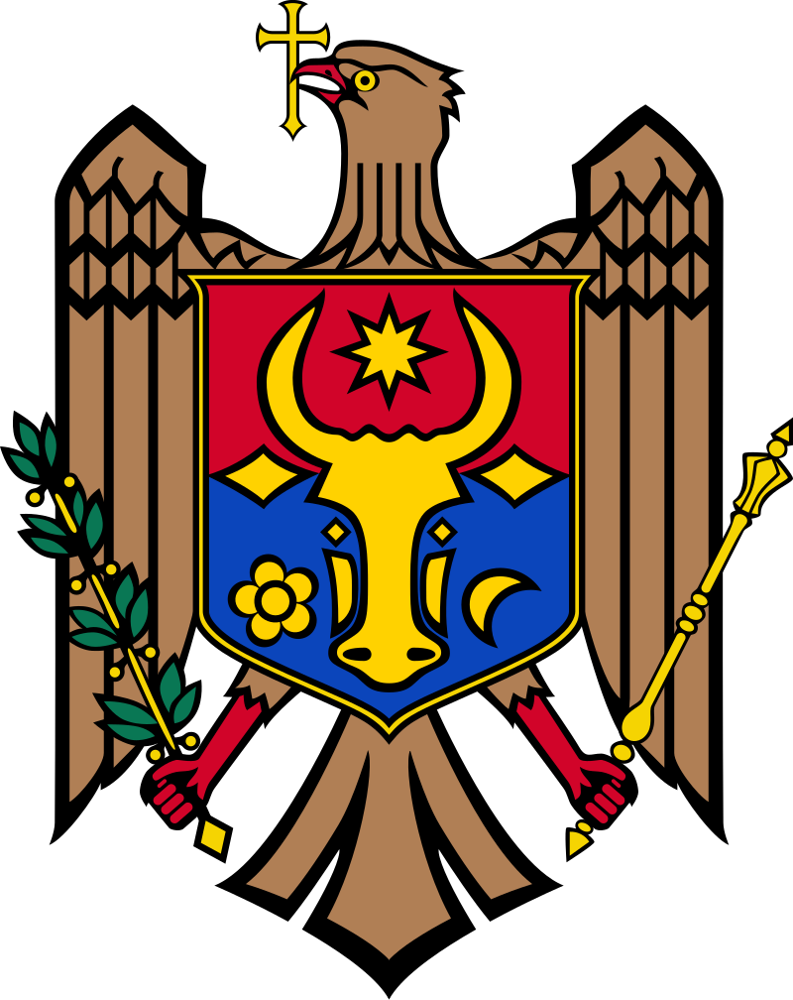
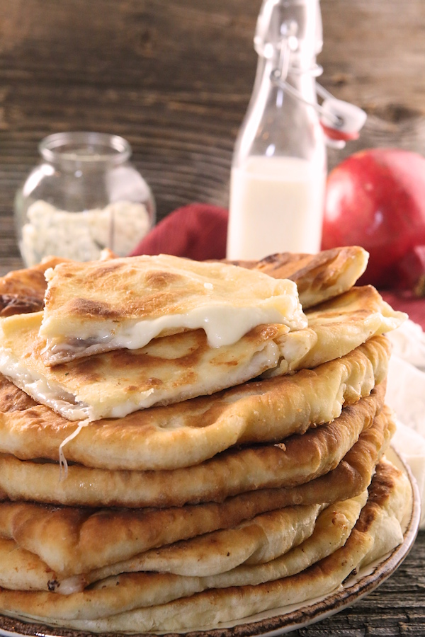

Plăcintă


A round, flat bread stuffed with cheese that is a classic among Moldovan cuisine. You can also stuff this bread with apples, cabbage, chocolate, potatoes and other delights to your heart's desire!
Ingredients
- Buttermilk: 1 cup
- Milk: 1 cup
- Egg: 1
- Oil: 3 tablespoons
- Salt: 1/2 teaspoon
- Baking Powder: 1 teaspoon
- Baking Soda: 1 1/2 teaspoon
- All-Purpose Flour: 4 1/2 cups (plus more for dusting)
- Canola Oil (or other frying oil): 1/2 cup
- Feta Cheese: 3 cups
- Mozzarella Cheese, finely shredded: 2 cups
Cheese Filling
Steps
- In a large bowl, whisk together 4 cups of flour, baking soda, baking powder, and salt. Stir in the egg, buttermilk, milk, and 3 tbsp of oil until dough comes together. Knead in the remaining 1/2 cup of flour gradually until a soft dough forms.
- Divide the dough into 8 balls, using a 1/2 cup measuring scoop for even shapes.
- On a lightly floured surface, roll out each piece of dough to a 9" circle. Place 1 cup of the cheese blend in the center and fold in the edges, pinching them to the top.
- Gently roll out again to an 8" circle and fry over med-low heat until golden (about 2 min on each side.)